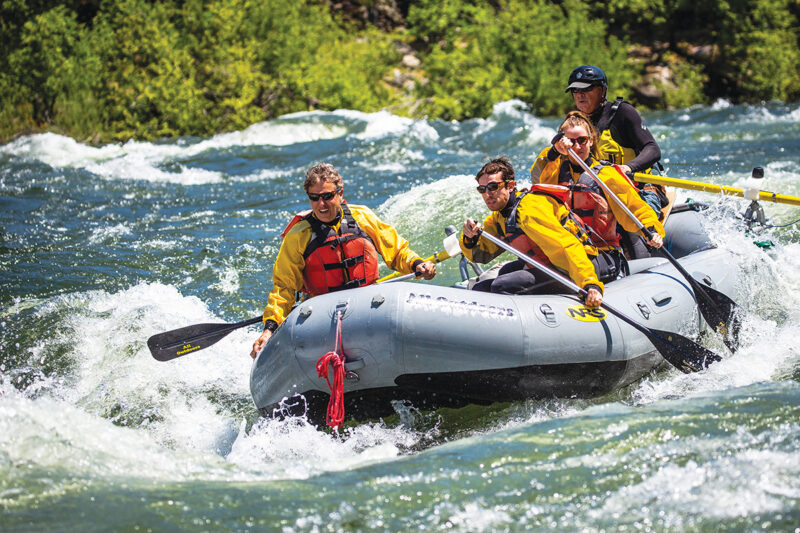
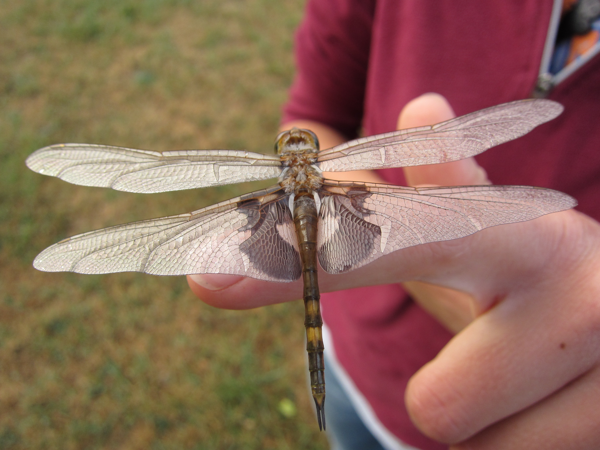

Teaching
SSC 111: Soil Microbiology
Graduate TA | 4 quarters: 2017-2020UC Davis, Instructor: Kate Scow Soil Microbiology is an upper-level undergraduate course that explores the role of microbes in soil processes with 3 hours of lab each week. As lead TA, my co-TA and I were responsible for every component of the lab, including introductory lectures, lab setup, field trips, in-lab supervision, grading, and review sessions. I also delivered guest lectures on microbes and carbon storage during the lecture portion of the class.
The class provided an overview of topics such as microbial transformation of nutrients and pollutants, modern and classic soil microbiological methods, and the impacts of agriculture on the soil microbiome. Experiments were designed to provide students with first hand experience of the soil electron tower, nitrogen and carbon transformations, soil DNA extraction and gel electrophoresis, microbial respiration, and field assessments of soil at the Russell Ranch LTRAS.

GEL 035: Rivers of California
Graduate TA | 1 quarter: 2020UC Davis, Instructor: Sarah Yarnell Rivers of California is a lower-level undergraduate course that serves as an introduction to geomorphology, climate and geology of rivers and watersheds, with case examples from California. The class includes discussions and guest lectures from noted hydrologists on the impacts of logging, agriculture, mining, urbanization and water supply on river processes.
This class took place during the unprecendented disruption of COVID-19 to the UC Davis class schedule. In partnership with Dr. Yarnell, I helped transition the class to a completely online format with a very short turnaround, including setup of the Canvas pages, Zoom links, and online exams. I served as chat moderator during lecture sessions, in addition to grading and ensuring students stayed up-to-date on all class and college-related developments.

Aullwood Audubon Naturalist
Naturalist Intern | Sept-Jan 2010Aullwood Audubon Nature Center, Dayton, OH
The Aullwood Audubon Nature Center in Dayton, OH is an environmental education and sustainable agriculture facility that provides an opportunity for schoolchildren and the public to enjoy and learn about nature, farming and the environment. As part of Aullwood's 2010 Naturalist Intern cohort, I led pre-K through 5th grade classes on nature and farm walks that focused on a variety of topics, including general nature exploration, geology and fossils, food webs and the different ecosystems present in central Ohio.